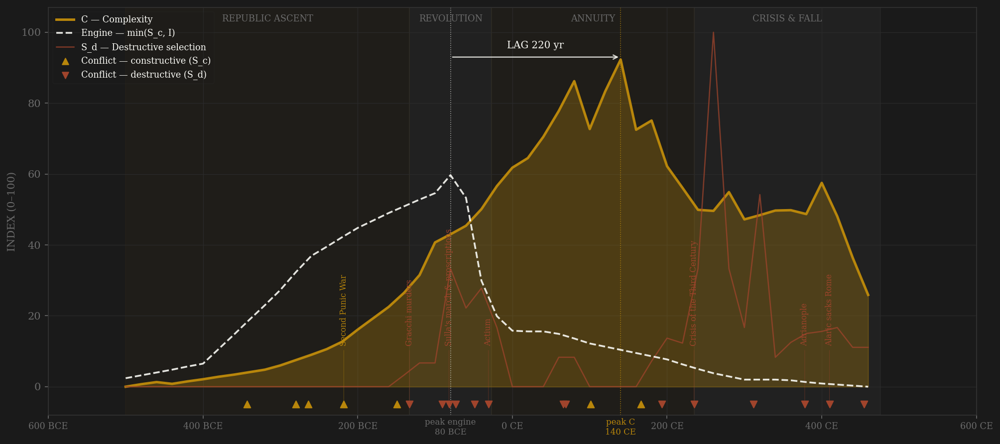
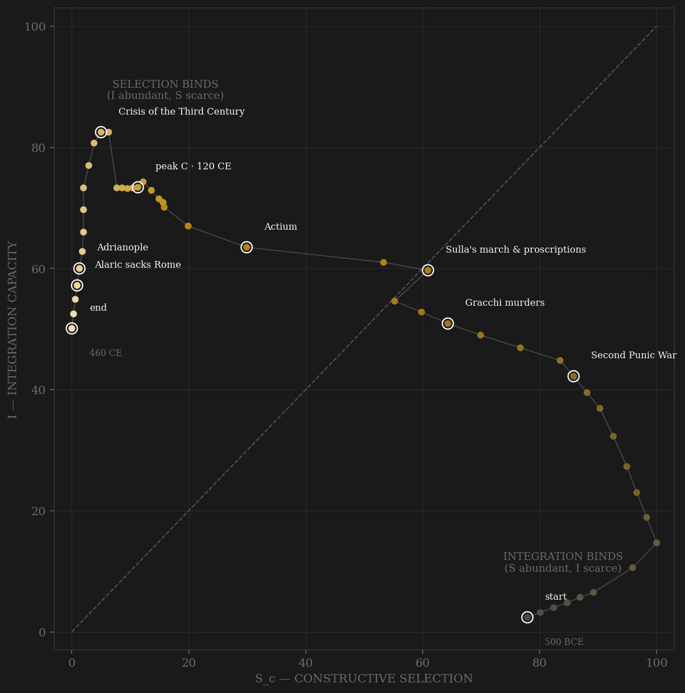

Rome's engine had two inputs: contested politics (consulships won, not given; new men rising) and physical integration (roads, citizenship, sea lanes). For four centuries integration was the binding constraint — the Republic had contest to spare and nowhere to put it. The engine peaked around 80 BCE, when the Social War forced citizenship onto Italy while politics was still competitive. Then Augustus made the trade: contest for stability. Constructive selection collapsed — the consulship became a gift — but complexity kept climbing for two more centuries on maintenance capacity alone, peaking under the Antonines around 140 CE. The 220-year lag between peak engine and peak output is the longest in the sample, consistent with lag scaling by system size. The third century called in the annuity: civil war (S_d spikes to its maximum), the denarius collapsing from 90% silver to under 5% — the entropy term, lab-measured.

The trajectory enters at the far lower right: the early Republic is all selection and no integration — maximum contest, minimum roads. It climbs the integration axis for four hundred years while contestability slowly erodes, crossing the diagonal near Sulla: the brief window when Rome had both. The Principate then slides down the selection axis at high integration — the coasting quadrant, where the state lives off μ(I)·C maintenance rather than engine output. Integration itself peaks around 220 CE, just after Caracalla extends citizenship to every free inhabitant of the empire — a fact the trajectory finds on its own. The ending is the diagnostic: the path pins against the S=0 wall and slides down it. Rome does not die at the origin — it dies with integration merely halved and contest at absolute zero. The engine's weakest link had been selection for two hundred years.
Each conflict is coded by locus and target, never by outcome. External rivalry that disciplines the state without touching its coordination machinery is constructive (S_c). Violence aimed at the polity's own coordination capacity — civil war, proscription, succession auction, invasions that penetrate the core — is destructive (S_d). Coding by outcome would make the destructive-selection finding a tautology; coding by locus keeps it falsifiable. The gross-selection series demonstrates the point: uncorrected, Roman 'selection pressure' peaks in 260 CE — at the empire's nadir — because usurper wars masquerade as wars. Hannibal is the hard case: Italy invaded for fifteen years, yet the Senate levied armies throughout — coded S_c by target, because the coordination machinery never broke.
| YEAR | CONFLICT | CODE | CODING RATIONALE |
|---|---|---|---|
| 343 BCE | Samnite Wars | Sc | External peninsular rivalry; the Republic's formative competition |
| 280 BCE | Pyrrhic War | Sc | External peer contest; core untouched |
| 264 BCE | First Punic War | Sc | External great-power war; naval capacity forced into existence |
| 218 BCE | Second Punic War | Sc | Hannibal in Italy 15 years, yet Senate and levy functioned throughout — coded by target: machinery never broke |
| 149 BCE | Third Punic War | Sc | External; elimination of the rival |
| 133 BCE | Gracchi murders | Sd | Political violence enters domestic politics; the norm-break |
| 91 BCE | Social War | Sd | War within the alliance system; resolved by the citizenship expansion that spiked I |
| 82 BCE | Sulla's march & proscriptions | Sd | Army marched on Rome; purge of the elite by list |
| 73 BCE | Spartacus revolt | Sd | Internal servile war |
| 49 BCE | Caesar's civil war | Sd | Legions against the Senate |
| 31 BCE | Actium | Sd | Final warlord contest; contested politics ends with it |
| 66 CE | Jewish War | Sd | Internal provincial revolt |
| 69 CE | Year of Four Emperors | Sd | First post-Augustan succession war |
| 101 CE | Dacian Wars | Sc | External conquest; the last major constructive campaign |
| 166 CE | Marcomannic Wars | Sc | External frontier pressure disciplines the Antonine state |
| 193 CE | Year of Five Emperors | Sd | Succession auction; the Praetorians sell the throne |
| 235 CE | Crisis of the Third Century | Sd | Fifty years, ~26 claimants, three breakaway empires — S_d at maximum |
| 312 CE | Constantine's civil wars | Sd | Unity restored by internal war |
| 378 CE | Adrianople | Sd | External origin, core penetration: the eastern field army destroyed inside the empire |
| 410 CE | Alaric sacks Rome | Sd | Core penetration; the annuity exhausted |
| 455 CE | Vandal sack | Sd | Terminal core penetration |
| COMPONENT | GRADE | BASIS |
|---|---|---|
| S_c — Constructive selection | ○ scholar-coded | Political competition index: Broughton MRR, Hopkins 1983, Hölkeskamp 2010. Excludes war tempo (source conflates civil wars) and new-man % (double-counts mobility; late values are usurpation) |
| S_d — Destructive selection | ◐ event-counted | New civil wars per 20-yr period: Broughton MRR, Campbell 2005, de Blois 2002 |
| I — Integration | ◐ proxy series | Road km (Laurence 1999), citizenship % (Mouritsen 1998), Mediterranean shipwrecks (Parker 1992 / Wilson 2011), social mobility (Hopkins 1983) |
| C — Complexity | ◐ proxy series | Literary / legal / monumental indices (OCD; Conte 1994), urbanization (Wilson 2011, Hanson 2016), GDP per capita (Maddison 2007; Scheidel & Friesen 2009) |
| E — Entropy | ● lab-measured | Denarius silver content, 60 assayed points (Butcher & Ponting 2014) |
Composite rebuilt from 19 component files in data/raw/rome/ by scripts/build_rome_sicre.py — every proxy choice documented in script comments, including two exclusions made to keep S_c locus-pure. The denarius entropy series is lab-measured; everything else is proxy-grade. Rebuild: scripts/build_rome_sicre.py, then scripts/polity_report.py --slug rome